Euforia Asian Games dan Asian Para Games 2018 masih terasa, Youth Olympic Games 2018 baru selesai 18 Oktober ini. Ajang olahraga bergengsi itu ngebuktiin kalau atlet profesional yang masih remaja patut diperhitungkan.
Di Asian Games kemarin aja muncul peraih medali termuda sepanjang sejarah Asian Games. Yap, dia adalah Nyimas Bunga Cinta, yang meraih perunggu di cabang Skateboard. Nyimas masih berusia 12 tahun sekarang ini. Yap, baru banget masuk SMP, sob! Gokil nggak tuh?
HAI pun punya sederetan keheranan dan kekaguman sama kayak para netizen. Karena itulah, liputan ini dibuat. HAI pengen tahu gimana perjuangan mereka berbagi peran sebagai pelajar dan sebagai atlet, gimana pengorbanan mereka yang masa remajanya banyak dihabiskan di tempat latihan jauh dari teman-teman, dan apakah mereka menghadapi dilema antara mengejar prestasi sesuai kurikulum atau fokus lomba sampe dapet medali dan naik ke podium?
Simak ceritanya!
Kalau temen-temen di SMA umum yang cuma bisa main bola selesai sekolah atau pas di ekskul aja dijamin iri. Di sini, 4-6 jam sekolah dipakai untuk latihan olahraga. Pelajaran di kelas cuma 3 jam doang.
Murid di sini emang dibina untuk jadi atlet professional. Mereka mesti milih bidang olahraga untuk digeluti selama tiga tahun sama kayak murid di sekolah umum milih jurusan IPA atau IPS. Kegiatan latihan tiap harinya dimulai dari pukul subuh sampai pukul 8. Beres belajar di kelas, mereka balik ke asrama untuk istirahat. Dari pukul 15.00 hingga magrib, mereka berlatih lagi di GOR atau lapangan masing-masing.
"Formula latihan mereka berat, jadi nggak mungkin kalau ikut KBM dikasih soal jumlahnya sama. Makin berat dia. Untuk belajar, mereka dikasih modul. Tugas, dikirim lewat WA. Kalo pas UN mereka lagi latihan atau lomba di luar negeri, UN-nya dari sana. Biasanya, setelah lulus mereka dapet perhatian khusus dari Dinas Pendidikan Tinggi. Sertifikatnya bisa untuk jalur undangan," kata Suharsono, Kepsek SKO Ragunan Asik, kan?
Setelah ngajak ngobrol sejumlah atlet remaja, HAI menyimpulkan kalau mereka sering mengalami dilema. Mereka pengen berhasil baik di akademis dan prestasi olahraganya. Lagi di kejuaraan inget sekolah, pas di sekolah pengennya latihan aja.
Saat ditanya soal kelanjutan karier atletnya pun ada yang nggak yakin-yakin banget profesi atlet bisa menghidupi. Bahkan, ada yang ancang-ancang jadi PNS.
Untuk kamu yang sekarang masih sekolah dan mulai muncul keinginan serius di bidang olahraga, coba nih simak cerita para atlet yang sudah pro biar terinspirasi
Pertanyaan selanjutnya yang bikin HAI kepo adalah, gimana para atlet setelah mereka lulus SMA. Kalau ngebaca cerita Anthony Ginting atau Jonatan Christie, mereka milih untuk fokus di pelatnas aja tuh dan nggak terdaftar di universitas mana pun. Apa bener atlet bisa mulus kariernya tanpa butuh gelar sarjana lagi?
Nyatanya, HAI nemu juga, nih, atlet berprestasi yang jor-joran juga kuliahnya. Bahkan ada yang kuliah di dua kampus sekaligus. Ada pula yang IPK-nya nyaris sempurna. Wuih!
Tanpa ba bi bu lagi, kita simak langsung yuk cerita mereka
Bagi lo yang punya prestasi olahraga dan punya keinginan jadi atlet, tapi di satu sisi tetap mau mengenyam pendidikan tinggi, HAI siapin, nih, daftar kampus yang buka jalur khusus dengan prestasi olahraga.
Beberapa kampus mengharuskan lo tetap mengikuti jalur SNMPTN dan SBMPTN, tapi untuk memperkuat kemungkinan diterima lo bisa melampirkan bukti prestasi olahraga lo. Selain itu, beberapa kampus juga memiliki beasiswa khusus berupa pemotongan uang untuk siswa berprestasi
“UNJ punya jalur mandiri dengan seleksi prestasi olahraga. Kuotanya 10% dari jalur mandiri. Yang dicari memang orang-orang berprestasi, minimal juara 3 nasional,”
Alif, staf Penerimaan Mahasiswa Baru UNJ“Di BINUS, kami mau ngasih reward mereka yang punya prestasi akademik dan non akademik. Nantinya, mereka bakal an mengabdi buat mewakili BINUS dan Indonesia di berbagai kompetisi. Di BINUS sendiri ada 2 macam beasiswa buat yang berprestasi, beasiswa parsial dan beasiswa full atau beasiswa WIDIA,”
Judi Arto, Marketing Director BINUS.
Kalau mau fulltime jadi atlet, ini langkah-langkahnya menurut Bambang Laksono, Asisten Deputi Pengelolaan Olahraga Pendidikan:
Untuk jadi atlet hebat, kita mungkin nggak ngejalanin hidup kayak temen-temen lain. Butuh perjuangan lebih dan kerelaan untuk mengorbankan sesuatu. Lo mesti sering ke lapangan, kelas sering ditinggalkan, absen tiap kali diajak jalan sama teman, bahkan lo sampe nunda pacaran. Tapi, kalau serius menjalani karier sebagai atlet, lo bakal sampe ke momen kemenangan yang bakal dikenang banyak orang.
Biar makin mantep, simak nih pesan dari Nyimas dan Lalu di video ini:
Reporter :
Ali Sobri
Alvin Bahar
Fadli Adzani
Dewi Rachmanita
Syifa Nuri
Agung Mustika
Dio Firdaus
Editor :
Rizki Ramadan
Desainer Grafis & Illustrator :
M Farhan Haidar
Web Designer :
Fahmi Fu`adi
Foto
Doc. HAI, Doc. INASGOC, Doc. ASHGABAT GAMES 2017